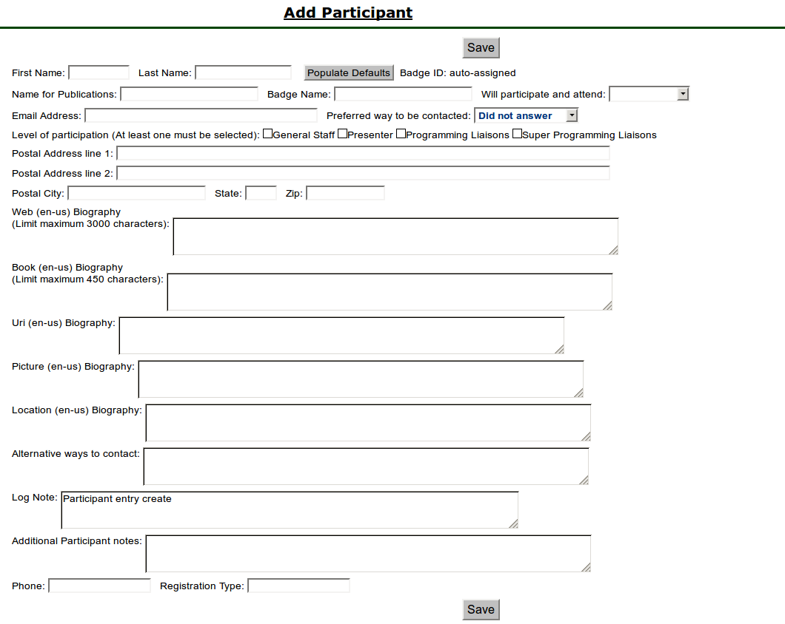

Presenter Flow in Zambia
Presenter Flow in Zambia
Percy <NELA.Percy@gmail.com>
Table of Contents
1 Introduction
There is a certain pattern to the flow of dealing with presenters, whether they are sought after as Guest Of Honor, or as presenters on specific subjects, or as individuals that people have suggested, and how to get them successfully into Zambia. This section of the documentation will be referencing some things only available to SuperLiaison individuals, so if you do not have that designation, this document might not be very useful to you in terms of work-flow, but it is always good to have an understanding on how things go on. Please do not let that deter you from enjoying this document.
2 Entering Presenters
There are two basic paths for entering Presenters into Zambia, either they are entered via outside suggestion (by someone, possibly the presenter themselves) when the call for presenters is open, or by someone on the Liaison Team entering their information, because negotiations by another channel of communications has happened.
This is only necessary if the Presenter is not already in the system. If the Presenter is in the system a member of the Liaison Team can indicate their interest without rentering their data.
Most of the work on a Presenter level is done from the "Manage Participants & Schedule" tab which references the StaffManageParticipants.php page. Most of the below sections are choices off of this page.
Figure 1: Manage Participants
2.1 Check to see if a Presenter already exists in Zambia
There are two places to check to see if an individual is already in Zambia. They could be already active for this year (perhaps in this capacity, perhaps in another) or they might need to be migrted from another con-instance to be available for this year.
2.1.1 Administer Participants Check
If they are already in Zambia for this year, you would be able to find them under the "Manage Participants & Schedule" tab, the second link down is the "Administer Participants" link which references the AdminParticipants.php page. This will bring up a set of ways to select the participant from information you know.
Figure 2: Administer Participants Header
If the Preseter exists under one of the pulldowns, you can continue from the the "Administer Participants" section below.
2.1.2 Migrate Participant from another con-instance
A Presenter might exist in Zambia but not be set for this con-instance, and we want only one instance of a person in Zambia, so the next step is to see if the Presenter can be migrated from another con-instance to the current con-instance.
Under the "Manage Participants & Schedule" tab, the third link down is the "Migrate Partitipant from another con-instance" link which references the StaffMigrageParticipant.php page. This will bring up a set of ways to select the participant from the information that you know, including their email address.
Figure 3: Migrate Participant Header
Once the Presenter is selected, a form very similar to the "Enter Participant" form is brought up, with several fields already filled in. Follow the instructions below from that point to make sure they are migrated to this con-instance. From that point forward, you should be able to find them under the "Administer Participants" link.
2.2 Presenters by Ouside Suggestions
Depending on your convention, many of the folks who are going to present either applied to do so (once you put the call for presenters) or are recommended by other folk. Either way they will probably have been entered in the Brainstorm Suggest a Presenter form, which is accessable under the Brainstorm "Suggest a Presenter" tab.
Figure 4: Brainstorm Suggest Presenter
Fortunately or unfortunately, depending on the individual, you might not even have enough information to track them down and invite them but most people are good at putting in the information. Once presenter information is entered, most of it will be in the "NotesOnPresenter" element, looking much like:

Figure 5: Notes On Presenter
The element appears at the bottom of a presenter administration screen.
Hopefully their name and email address will be in their profile should you desire to contact them. Hopefully it will also include the email address of the submitter, so if the information they submitted doesn't actually connect you, or is incorrect, they will be helpful in facilitating the contact.
2.3 Presenters by a Liaison
Often a Liaison person is tapped to enter in a participant because of negotiations done using other chanels. If they aren't already in Zambia, having checked both the "Administer Participants" link and the "Migrate Partitipant from another con-instance" link, the participant has to be entered manually. Entering in the Presenter's information is slightly more comprehensive than doing so in the Brainstorm "Suggest a Presenter" tab. Under the "Manage Participants & Schedule" tab, the fourth link down is the "Enter Participant" link which references the StaffEditCreateParticipant.php page.

Figure 6: Add Participant
- In the names section, the first name, name for publications and badgename (the last two should be the same) are most important. The last name, although not mandatory, is often useful for disambiguation purposes. The "Populate Defaults" button is mostly useless in our circumstances, being that it simply puts the first and last name in the publication and badge name fields.
- The Will Participate and attend is very useful, but if you don't know their state it is acceptable to leave that blank for now. Unfortunately that will be problematic going forward beyond the compensation elements, for they won't show up in the pull-down menues until they are marked as "Yes".
- It is important for the email address to be all in lower case.
- Depending on the convention, the preferred way to be contacted may be limited.
- Make sure that the "Presenter" box is checked.
- The requirement level of the postal addresses for presenters is convention dependant.
- The Biography elements are all the "raw" elements, i.e., what the
presenter themselves can see and edit. Depending on how your
convention is organized, this might also be the final bio or it
might have several different stages to go through before it is
finalized. The language in parentheses is only useful to note,
if your convention is multi-lingual. (e.g., en-us is english,
united states, fr-ca is french canadian)
- Web is the bio shared on the web.
- Book is what is being put in the convention book.
- URIs should be in fully-formed link format.
- Pictures can be locally or remotely sourced.
- Location should go away soon, don't worry about that.
- The alternative ways of contact is always useful, if the presenters are willing to offer up one or more. These can include other email addresses, contact info for support people, or other ways of being in touch with them.
- The Log Note will also end up at the bottom of your page, with the rest of the Notes On Presenter elements.
- Additional Participant notes are notes that follow their profile around.
- Phone number is for contact, but depending on the strictures of your convention this might or might not be required.
- Registration Type currently is a fill-in field that should be filled in with 'PresenterComp" but will become a pull-down list at some point.
- Don't forget to hit the "Save" button, please.
3 Updating Presenter Information
Once in the system, the most common request by presenters is to have their password reset so that they can update the rest of their profile. To do this, go to the Administer Participants link under the "Manage Participants & Schedule" tab. Select the presenter from the drop-down menu and, once selected you may change their password, their interested and available setting, and their published name.

Figure 7: Administer Participants
Most of the other modification pages won't have the presenter in the select menu until they are marked as a "Yes", as previously explained. This is one of the pages that all the potential presenters are available in the pull-down menu. If they are not available here, they might still be in the system, just not marked as someone you can see. If you think they should already be in the system, and aren't showing up, please check with someone with greater permissions, or other div-heads. They may already be in the system, just under another division.
At the bottom of the Admin Participants page, there are several different links. The next-most useful page is the first one: "Edit PUBNAME further". When using the direct link as opposed to just clicking through, you will need to reselect the participant from the top of the page.
StaffEditCreateParticipant.phpThe StaffEditCreateParticipant.php link will take you back to the page you should be familiar with, when you were creating the participant. You can add to or change any of the extant information at this time. If you want to see the importance of the fields, please see section on Presenters by a Liaison for diagram and instructions.
4 Entering Compensation
There are three ways to reach the place to enter Compensation for a Presenter. One way is to go to the bottom of the Admin Participants page mentioned in the last section, then select the second link: "Set Compensation for PUBNAME", the second is to use the direct link above. When using the direct link, you will need to reselect the participant from the top of the page.

Figure 8: Compensation Update
Only fill in the applicable compensation fields. Please don't forget to hit "Update" before leaving the page. Compensation is very conference dependant, please make sure any compensation entered is in lines with your conference's policies.
The third path is to select the presenter name from the Presenter Compensation table.
PresenterCompensation.php
Figure 9: Compensation Information
This table will fill in with the information entered. The notes display makes it a very big table, hence the option without notes is the default.
5 Entering Schedule Elements offered
There are a few ways that Schedule Elements get entered into Zambia. A Schedule Element is anything that might end up on the schedule. This could be an Author Reading, a performance, a hosted meal, a class, a panel, a keynote speech, or anything else that is schedule worthy.
The information entered is visible to anyone who chooses to look at the website. So people interested in what the decision process might be, or are looking to see if what they proposed is already under consideration, they can see much of the information. This gives the community some sense of what is going on, so being descriptive about the information entered is a good thing.
Once a Schedule Element is entered, if it is to be associated with a particular individual or set of individuals, that is done in several ways.
5.1 S.E. by Outside Suggestions
The Schedule Elements entered in from the outside, or by a presenter themselves, will have certain fields filled in, but not others. Hopefully the submitter has given sufficient information in the form for you to determine if the Schedule Element is worthwhile, appropriate, or fits within this particular event. They might have also suggested a specific person for the Schedule Element. The information asked for should be fairly straight forward. This is found on the Brainstorm screen under the Suggest a Session tab.
Figure 10: Brainstorm New Session
5.2 S.E. by a Presenter
This is the most preferred way to add Schedule Elements that are classes being put on by a specific Presenter or set of Presenters. If you are a liaison for said presenter, instead of adding the class Schedule Element in the S.E. by a Liaison section below, please log in as your Presenter (since you will more than likely be setting their password, anyway) and follow these instructions.
When a presenter logs in, the first page seen is the welcome page. This, unlike most of what is done in Zambia has blue (rather than green) tabs, so should be visually different. There is a "Submit a Proposal" tab at the top. There might also be a "Submit a Proposal" link in the body. If the tab is blue (not grayed out) then that tab can be used to propose Schedule Elements.
Figure 11: Propose Session
- Track: Finding the appropriate track is sometimes tricky if it falls into multiple categories. You may want to set this to some variant of "General", or "I don't know", depending on the decision of your particular convention.
- Type: What type of offering it is. Often "Panel" or "Class" but might be something else.
- Title and Subtitle: Some conventions have limits on the length of these, and how they are published.
- Room Set: Most room-sets will be standarized by your convention, but sometimes a presenter has a particular preference that can be accommodated. Most often "class room", "theater", or "unspecified" will be your choice.
- Web Description: This is the description of the Schedule Element that will be on the website, once it is scheduled. It is shared with the Brainstorm page until then. Because of this, please enter an accurate description of the Schedule Element. There may be length constraints (on both ends) for the description.
- Program Book Description: This is the description of the Schedule Element that will end up in the publications. It doesn't need to be entered immediately (especially if the Schedule Element has not yet become "Vetted"). There are probably has greater restrictions on the length, due to the web costing less for space than publications do.
- Additional info: This is for anything else that should be tracked with this particluar class, like notes for the programming committee, if there are handouts, do they need a massage table, or the like.
- Please, do not forget to save your work, or you will be unhappy.
5.3 S.E. by a Liaison
Note: The preference, if possible, is for the liaison to log into Zambia as the Presenter in question, and enter in their classes from there, as above in the S.E. by a Presenter section.
If you are filling out this form, you will find that it isn't overly complex, but there are some very important pieces here. This can be found from the first link, the "Create a New Session" link under the "Manage Sessions" tab, or directly from the CreateSession.php link.
Figure 12: Add New Session
- The session number is just there for reference. If the next step in your flow is to directly assign a person to a session, then note down the number for future reference (the next section).
- Division: Most probably going to be "Programming" but other options are available.
- Track: Finding the appropriate track is sometimes tricky if it falls into multiple categories. You may want to set this to some variant of "General", or "I don't know", depending on the decision of your particular convention.
- Type: What type of offering it is. Often "Panel" or "Class" but might be something else.
- Pub. Status (Publication Status): Describes if it is closed to a certain set of people, or only interesting to them, but most often will be "Public".
- Title and Subtitle: Some conventions have limits on the length of these, and how they are published.
- Invited Guests Only: If this is going to be given by a pre-scripted specific person, or set of people, this should be checked, so other presenters cannot sign up to present for this Schedule Element. If it is unchecked, when Presenters look for the list of Schedule Elements they are able to sign up for, this Schedule Element will be amongst them. This effects weather the Prospective Participant Info below, is seen.
- Sign up Req.? (Sign up Required): This is in place in case any particular Schedule Element requires pre-con sign-up.
- Est. Atten. (Estimated Attendance): This should be left blank, since it is part of the feedback and history of the Schedule Element after it is given.
- Duration: This might be set by the convention, or might be dependant on the Schedule Element, type of Schedule Element, or many other things. There should be a default time set here by your convention. This may or may not contain the break between Schedule Elements, again depending on the decision of your particular convention.
- Room Set: Most room-sets will be standarized by your convention, but sometimes a presenter has a particular preference that can be accommodated. Most often "class room", "theater", or "unspecified" will be your choice.
- Status: If you are just entering the Schedule Element, and it has not been previously negotiated as a Schedule Element that has been confirmed, please set it as "Brainstorm". If it has been accepted as definitely happening, "Vetted" is the level it should be set to.
- Web Description: This is the description of the Schedule Element that will be on the website, once it is scheduled. It is shared with the Brainstorm page until then. Because of this, please enter an accurate description of the Schedule Element. There may be length constraints (on both ends) for the description.
- Program Book Description: This is the description of the Schedule Element that will end up in the publications. It doesn't need to be entered immediately (especially if the Schedule Element has not yet become "Vetted"). There are probably has greater restrictions on the length, due to the web costing less for space than publications do.
- Prospective Participant Info: This information gets shared with all the Presenters, if the Schedule Element is not restricted by the "Invited Guests Only" checkbox being checked. This information is available in the area where Presenters may choose to sign up for this Schedule Element. Things like "need at least three years experience in the publishing field, from the publisher's point of view" or the like would go in this field.
- Notes for Participants: If you have yet to assign the Schedule Element to someone in the system who has said "Yes", then their name should be put in this field. When Schedule Elements are actually vetted and scheduled, then this field should be any particular notes that will be shared with the presenter or presenters, in their schedule.
- Notes for Tech and Hotel: This is any of the notes that will go to logistics, beyond the Features and Services requests below. Like "will need to shift around the table, with the assistant on it, in the middle of the class".
- Notes for Programming Committee: If this was a Schedule Element submitted via the Brainstorm Submit a New Session (see above) then any notes not specifically in the Schedule Element description end up here. If you want to put commentary here, notes about the Schedule Element, why it was requested, who saw it elsewhere, if it fits into multiple tracks, or the like, this is the place to make such notations.
- Features and Services: These are pick-lists that you can choose various features of the room, or services that should be provided for the room, for the paricular Schedule Element. Everything from a CD Player to a Flush Toilette should be covered here. If it isn't covered here, add it to the "Notes for Tech and Hotel" above. Should it be a regular enough addition, it will probably be added to the select boxes here.
- Publication Characteristics: Originally a hold-over from before, but might now be used to indicate an expanded track conception of the Schedule Elements, for multi-tracked elements.
- Please, do not forget to save your work, or you will be unhappy.
5.4 Associating the Schedule Element with a Presenter
Most conventions only want to assign Presenters to Schedule Elements, after said element has become vetted, but not all convetions work that way.
If you want to assign a particular Schedule Element to an individual or group of Presenters, make sure said individual or group have already been set to "Yes" in terms of being willing to present for your convention. The next step is to find the Schedule Element in question.
One way is to look under the "Manage Sessions" tab at the View All Sessions link. Find the Schedule Element, then select the link provided by the number (not the title).
A second way is also under the "Manage Sessions" tab, using the link "(Precis View With Links)". Find the Schedule Element, then select the link provided by the number (not the title).
A third path to the Schedule Element in question is still under the "Manage Sessions" tab. Enter the noted session id number in the "Session ID:" box at the bottom of that screen and hit the "Search" button. This should bring up just one record (the record that you are expecting, hopefully), again simply select the link provided by the number (not the title).
The fourth and fifth path presume that you have already marked the class as "Vetted", otherwise it will not show up for either of these.
A fourth path is still under the "Manage Sessions" tab, using the "Edit an Existing Session" link. Not only will this allow you to select your Schedule Element from the pull-down list of possible Schedule Elements and edit the information that might have changed since it was submitted, but also if you select the link provided by the "Session #" number, you will be in the right place.
A fifth path is under the "Manage Participants & Schedule" tab, using the "Assign participants to a session" link and choosing the Schedule Element from the pull-down menu at the top of the page.
StaffAssignParticipants.phpOnce you are on the "Assign Participants" page with the correct Schedule Element, go to the bottom of the page where the "Assign participant not indicated as interested or invited." pull-down menu is located and select the presenter applicable then hit the "Add" button. The presenter will now show up with their "Assigned" box checked. If this particular Schedule Element has had other presenters invited, or had other presenters expressed interest in being part of this particular Schedule Element, that individual will also show up here. They might have their Assigned box checked or not, if that Schedule Element has been associated with that individual.
6 Choosing Schedule Elements
Once all the potential Schedule Elements are in place, then comes the delight of choosing which elements will be part of your convention, when they will happen, and which will have to be left for other conventions. This is mostly dependant on the path of each convention, and is therefore outside the scope of this document to dictate. There are several useful reports that might help with this process, listed in the appendix.
7 Appendix
| Page Name | Link | Description |
|---|---|---|
| Manage Participants | StaffManageParticipants.php | Staring point for most Participant management activity. |
| Suggest A Presenter | BrainstormSuggestPresenter.php | Used by non-con folks to suggest Participants. |
| Migrate A Participant | StaffMigrageParticipant.php | Used to Migrate a Participant from another con-instance. |
| Create Participant | StaffEditCreateParticipant.php?action=create | Used to create a Participant from scratch. |
| Administer Participant | AdminParticipants.php | Used to set the password, attendence state, and pubsname only. |
| Edit Participant | StaffEditCreateParticipant.php?action=edit | Used to update a Participant's information. |
| Edit Compensation | StaffEditCompensation.php | Used to edit a Presenter's compensation package. |
| Presenter Compensation | PresenterCompensation.php | Used to display the compensation for all presenters compensated. |
| Suggest a Session | BrainstormCreateSession.php | Used by non-con folks to suggest Schedule Elements |
| Propose a Session | MyProposals.php | Used by a Presenter to propose a Schedule Element. |
| Create a New Session | CreateSession.php | Used to create a Schedule Element from scratch. |
| Assign Participants | StaffAssignParticipants.php | Used to connect a Participant to a Schedule Element. |
| Report Name | Link | Description |
|---|---|---|
| View All Sessions | genreport.php?reportname=ViewAllSessions | Shows all sessions, regardless of their status. |
| Session Notes | genreport.php?reportname=sessionnotes | Interesting info on a Session for sessions whose status is one of EditMe, Brainstorm, Vetted, Assigned, or Scheduled. |
| Picky People | genreport.php?reportname=conflictpickypeople | Show who the picky people do not want to be on a panel with and who they are on panels with. |
| Too Few People | genreport.php?reportname=conflictunder3assigned | Scheduled sessions in division Program: If these are panels, you need at least 3 people. Other types require at least 1. |
| Assed V. Sched | genreport.php?reportname=conflictschedassn | These are sessions that are either in the grid and have no one assigned or vice versa. |
| Double Booked | gdenreport.php?reportname=conflictpartdup | Find all instances where a participant is scheduled to be in two or more places at once. |
| # of sessions | genreport.php?reportname=conflictpartnums | Compare number of sessions participants requested with the number of which they were assigned. |
In point of fact, there turned out to be too many useful reports, for this sampling to be useful. Please check the Conflict Reports and the Prog Reports Indicies on the Available Reports page.